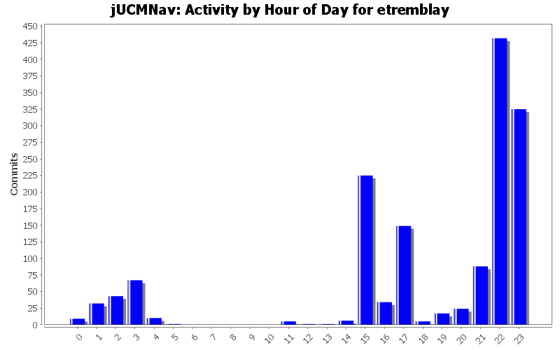
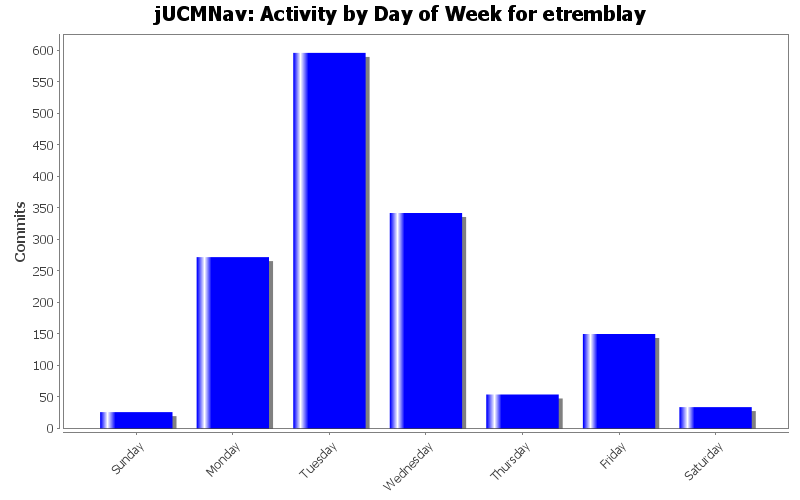

| Directory | Changes | Lines of Code | Lines per Change |
|---|---|---|---|
| Totals | 1474 (100.0%) | 70147 (100.0%) | 47.5 |
| src/ucm/map/impl/ | 107 (7.3%) | 11354 (16.2%) | 106.1 |
| src/urncore/impl/ | 57 (3.9%) | 7503 (10.7%) | 131.6 |
| src/ucm/performance/impl/ | 48 (3.3%) | 5637 (8.0%) | 117.4 |
| src/ucm/map/ | 108 (7.3%) | 5536 (7.9%) | 51.2 |
| src/urncore/ | 65 (4.4%) | 5108 (7.3%) | 78.5 |
| src/ucm/performance/ | 67 (4.5%) | 4165 (5.9%) | 62.1 |
| src/grl/ | 12 (0.8%) | 2958 (4.2%) | 246.5 |
| src/seg/jUCMNav/tests/progress/ | 3 (0.2%) | 2188 (3.1%) | 729.3 |
| src/grl/impl/ | 12 (0.8%) | 1869 (2.7%) | 155.7 |
| src/seg/jUCMNav/views/stub/ | 12 (0.8%) | 1728 (2.5%) | 144.0 |
| src/urn/impl/ | 16 (1.1%) | 1696 (2.4%) | 106.0 |
| src/ucm/scenario/impl/ | 20 (1.4%) | 1454 (2.1%) | 72.7 |
| src/seg/jUCMNav/model/commands/transformations/ | 31 (2.1%) | 1413 (2.0%) | 45.5 |
| src/ucm/map/util/ | 8 (0.5%) | 1367 (1.9%) | 170.8 |
| src/grl/util/ | 8 (0.5%) | 1209 (1.7%) | 151.1 |
| src/seg/jUCMNav/tests/commands/ | 2 (0.1%) | 1098 (1.6%) | 549.0 |
| src/seg/jUCMNav/editparts/ | 84 (5.7%) | 1071 (1.5%) | 12.7 |
| src/urncore/util/ | 8 (0.5%) | 1003 (1.4%) | 125.3 |
| src/urn/ | 16 (1.1%) | 962 (1.4%) | 60.1 |
| src/ucm/impl/ | 12 (0.8%) | 823 (1.2%) | 68.5 |
| src/ucm/scenario/ | 20 (1.4%) | 806 (1.1%) | 40.3 |
| src/ucm/performance/util/ | 8 (0.5%) | 786 (1.1%) | 98.2 |
| src/seg/jUCMNav/editparts/treeEditparts/ | 27 (1.8%) | 780 (1.1%) | 28.8 |
| src/seg/jUCMNav/model/commands/create/ | 24 (1.6%) | 757 (1.1%) | 31.5 |
| src/seg/jUCMNav/figures/ | 48 (3.3%) | 663 (0.9%) | 13.8 |
| src/seg/jUCMNav/views/property/ | 20 (1.4%) | 472 (0.7%) | 23.6 |
| src/ucm/ | 12 (0.8%) | 460 (0.7%) | 38.3 |
| src/seg/jUCMNav/ | 6 (0.4%) | 455 (0.6%) | 75.8 |
| src/seg/jUCMNav/model/ | 6 (0.4%) | 419 (0.6%) | 69.8 |
| src/ucm/scenario/util/ | 8 (0.5%) | 402 (0.6%) | 50.2 |
| src/seg/jUCMNav/editors/palette/tools/ | 5 (0.3%) | 386 (0.6%) | 77.2 |
| src/seg/jUCMNav/views/property/descriptors/ | 12 (0.8%) | 333 (0.5%) | 27.7 |
| / | 19 (1.3%) | 333 (0.5%) | 17.5 |
| src/seg/jUCMNav/views/wizards/ | 2 (0.1%) | 329 (0.5%) | 164.5 |
| src/seg/jUCMNav/views/compositeList/ | 7 (0.5%) | 316 (0.5%) | 45.1 |
| src/seg/jUCMNav/editors/resourceManagement/ | 4 (0.3%) | 307 (0.4%) | 76.7 |
| src/seg/jUCMNav/figures/router/ | 21 (1.4%) | 295 (0.4%) | 14.0 |
| src/urn/util/ | 8 (0.5%) | 288 (0.4%) | 36.0 |
| src/seg/jUCMNav/editors/palette/ | 10 (0.7%) | 271 (0.4%) | 27.1 |
| src/ucm/util/ | 8 (0.5%) | 250 (0.4%) | 31.2 |
| src/seg/jUCMNav/editors/ | 57 (3.9%) | 201 (0.3%) | 3.5 |
| src/seg/jUCMNav/editpolicies/layout/ | 7 (0.5%) | 187 (0.3%) | 26.7 |
| src/seg/jUCMNav/model/commands/changeConstraints/ | 10 (0.7%) | 146 (0.2%) | 14.6 |
| src/seg/jUCMNav/actions/ | 27 (1.8%) | 123 (0.2%) | 4.5 |
| src/seg/jUCMNav/editpolicies/element/ | 6 (0.4%) | 115 (0.2%) | 19.1 |
| src/seg/jUCMNav/editors/actionContributors/ | 5 (0.3%) | 59 (0.1%) | 11.8 |
| src/seg/jUCMNav/views/ | 40 (2.7%) | 42 (0.1%) | 1.0 |
| src/seg/jUCMNav/tests/ | 4 (0.3%) | 24 (0.0%) | 6.0 |
| src/tests/commands/ | 1 (0.1%) | 0 (0.0%) | 0.0 |
| src/tests/ | 1 (0.1%) | 0 (0.0%) | 0.0 |
| src/seg/jUCMNav/views/resp/ | 11 (0.7%) | 0 (0.0%) | 0.0 |
| src/seg/jUCMNav/model/util/modelexplore/ | 4 (0.3%) | 0 (0.0%) | 0.0 |
| src/seg/jUCMNav/model/util/ | 4 (0.3%) | 0 (0.0%) | 0.0 |
| src/seg/jUCMNav/model/ucm/util/ | 6 (0.4%) | 0 (0.0%) | 0.0 |
| src/seg/jUCMNav/model/ucm/impl/ | 38 (2.6%) | 0 (0.0%) | 0.0 |
| src/seg/jUCMNav/model/ucm/ | 38 (2.6%) | 0 (0.0%) | 0.0 |
| src/seg/jUCMNav/model/commands/delete/ | 30 (2.0%) | 0 (0.0%) | 0.0 |
| src/seg/jUCMNav/model/commands/ | 44 (3.0%) | 0 (0.0%) | 0.0 |
| src/seg/jUCMNav/icons/ | 41 (2.8%) | 0 (0.0%) | 0.0 |
| src/seg/jUCMNav/emf/ | 43 (2.9%) | 0 (0.0%) | 0.0 |
| src/seg/jUCMNav/editpolicies/feedback/ | 2 (0.1%) | 0 (0.0%) | 0.0 |
| src/seg/jUCMNav/editpolicies/directEditPolicy/ | 1 (0.1%) | 0 (0.0%) | 0.0 |
| src/seg/jUCMNav/editpolicies/directEdit/ | 1 (0.1%) | 0 (0.0%) | 0.0 |
| src/seg/jUCMNav/editpolicies/ | 73 (5.0%) | 0 (0.0%) | 0.0 |
| icons/ | 8 (0.5%) | 0 (0.0%) | 0.0 |
| .settings/ | 1 (0.1%) | 0 (0.0%) | 0.0 |

A little bit more command tests.
0 lines of code changed in 1 file:
Lesson learned... Never try to make an SWT application in 3.1 for 3.0.... The layout won't work like you designed it in 3.1...
Added condition editing in the StubBindingDialog. Quick hack to take what was working in the 3.1 version done during the day and add it to the 3.0 version. The layout is not as nice though in 3.0.
0 lines of code changed in 6 files:
Deleted useless Resp view actions.
Added a create map button in the Stub Dialog.
0 lines of code changed in 2 files:
Performance improvements in Resp view + some bug fix...
0 lines of code changed in 2 files:
Resp View scrolling now work after 3h of tweaking... I hate SWT sometimes...
0 lines of code changed in 3 files:
Small bug fix. RespView now update correctly when you switch between editors and when you close them.
The view will update when you add a new map.
0 lines of code changed in 2 files:
Selection synchronizing between resp view and the editor.
0 lines of code changed in 5 files:
That's what happen when you don't test enough before commiting... My reponsibility list items were not responding to name or description changes anymore since now I was listing refs instead of defs. Fixed now.
0 lines of code changed in 1 file:
Pretty big commit!
Refactored the composite list control to be useable with something else than the responsibility list.
The resp view will now refresh properly when you add/remove/change a responsibility in the map.
The rep view will change when you change the tab in the editor (won't change if you use the outline). Now anything can listen to know when the tab changes.
332 lines of code changed in 14 files:
Added a really basic Responsibility View. Right now you can select each responsibility but the selection synchronization is not there yet.
If you change info of responsibilities it'll show in the list, but if you add new ones it won't for the moment...
0 lines of code changed in 5 files:
Delete of PluginBindings In/OutBindings should now be handled in all the situations where they should be deleted that I know of...
It think my code is now "beta ready".
0 lines of code changed in 11 files:
Deleting a map will now handle deletion of bindings. Select All and then delete on a map when there's a stub with bindings now works.
0 lines of code changed in 3 files:
Delete of PluginBindings/InBinding/OutBinding are now done using Compounds commands. This improve code reuse a lot.
0 lines of code changed in 5 files:
Added a lot of comments in DeleteMultiNodeCommand, DeleteNodeCommand and DeletePluginCommand.
Implemented pre and post conditions of DeletePluginCommand, DeleteMultiNodeCommand.
0 lines of code changed in 3 files:
Delete of PluginBindings now works when deleting a stub with 1 or more number of in or out...
StubBindingsDialog now display IN and OUT from 1 instead of 0.
0 lines of code changed in 4 files:
Double clicking on a stub without any plugin now work....
0 lines of code changed in 1 file:
Added some comments.
62 lines of code changed in 4 files:
New dialog when you double click on a dynamic stub to select the map you want to open.
1666 lines of code changed in 8 files:
Can now delete in/out Bindings. The StubBindingDialog is now much more professionnal looking. Dynamic stubs are now functionnal in the dialog.
0 lines of code changed in 3 files:
Jipi, Lesson #1: Test before commiting :) The application was not even loading after you renamed messages.properties. :)
messages_en updated in Messages.java...
0 lines of code changed in 2 files:
(60 more)